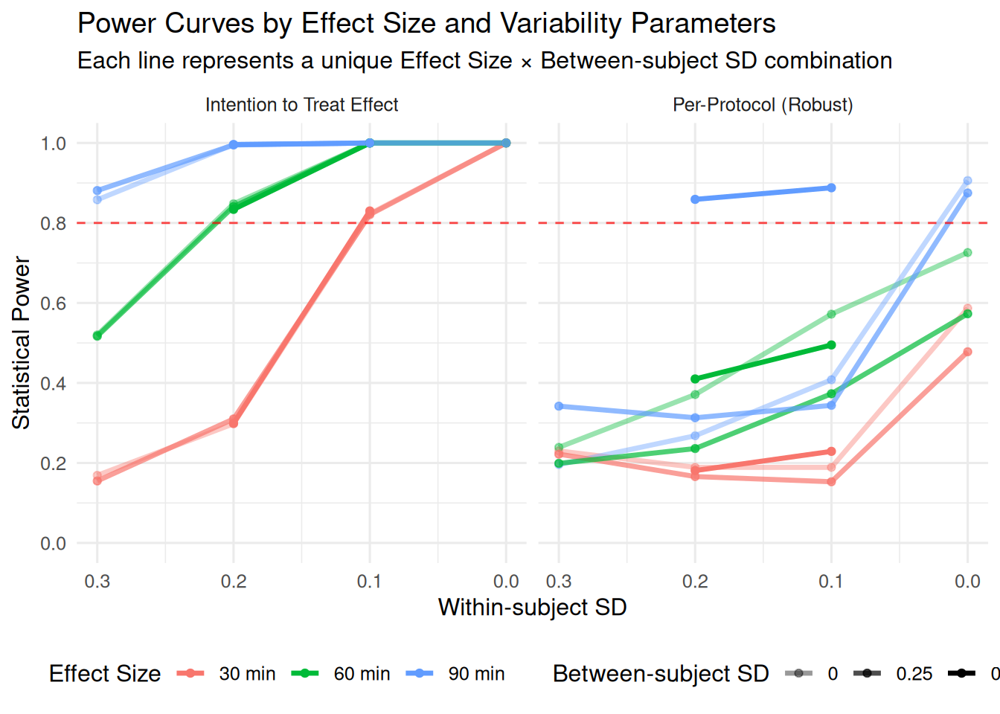

This document demonstrates a simulation-based power analysis for a two-arm parallel randomized controlled trial (RCT) with compositional outcomes. The simulation models 24-hour time use data consisting of three components: sleep, sedentary time, and physical activity, which sum to 1440 minutes (24 hours). The analysis includes visualization of power curves and effect sizes to help determine optimal sample sizes and assess the sensitivity of the study design to different parameters.
The within-subject SD (s_within) parameter controls how much a person’s sedentary behavior varies from day to day around their personal average. This captures the natural day-to-day fluctuations in behavior that everyone experiences.
2.2.1 What Different SD Values Mean in Practice
Let’s illustrate what different within-subject SD values mean for typical sedentary behavior patterns:
How Within-Subject SD Translates to Daily Behavioral Variation
Within-Subject SD
Mean Sedentary
SD (minutes)
Min
Max
Daily Range
Behavioral Interpretation
SD = 0.1
543.3
53.6
460.6
618.9
158.3
Very consistent (±15-20 min/day)
SD = 0.2
590.1
90.3
453.1
783.1
330.0
Moderately consistent (±30-40 min/day)
SD = 0.3
545.5
108.4
381.1
787.3
406.2
Moderately variable (±45-60 min/day)
SD = 0.4
600.9
139.0
363.8
767.0
403.2
Highly variable (±60-80 min/day)
Code
# Create visualization of different variability levelsvariability_plot <-ggplot(variability_examples, aes(x = day, y = sedentary, color = sd_level)) +geom_line(size =1, alpha =0.8) +geom_point(size =2, alpha =0.7) +geom_hline(data = variability_examples %>%group_by(sd_level) %>%summarise(mean_sed =mean(sedentary)), aes(yintercept = mean_sed, color = sd_level), linetype ="dashed", alpha =0.6) +facet_wrap(~ sd_level, ncol =2) +labs(title ="Day-to-Day Sedentary Behavior Patterns by Within-Subject Variability",subtitle ="Each panel shows 14 days of simulated sedentary time for different SD levels\nDashed lines show individual means",x ="Day",y ="Sedentary Time (minutes)",color ="Variability Level" ) +theme_minimal() +theme(legend.position ="none", # Remove legend since facets show the levelsstrip.text =element_text(size =12, face ="bold") ) +scale_color_viridis_d(option ="plasma") +scale_y_continuous(breaks =seq(500, 700, 25))print(variability_plot)
Code
# Create a deviation plot to show how much each day deviates from personal meandeviation_plot <-ggplot(variability_examples, aes(x = day, y = deviation_from_mean, fill = sd_level)) +geom_col(alpha =0.7) +geom_hline(yintercept =0, color ="black", size =1) +facet_wrap(~ sd_level, ncol =2) +labs(title ="Daily Deviations from Personal Average",subtitle ="Positive values = more sedentary than usual; Negative values = less sedentary than usual",x ="Day",y ="Deviation from Personal Mean (minutes)",fill ="Variability Level" ) +theme_minimal() +theme(legend.position ="none",strip.text =element_text(size =12, face ="bold") ) +scale_fill_viridis_d(option ="plasma") +scale_y_continuous(breaks =seq(-80, 80, 20))print(deviation_plot)
2.2.2 Real-World Context
These variability levels correspond to different types of lifestyle patterns:
SD = 0.1 (Very Consistent): Someone with a highly regular routine - same commute, same work schedule, consistent evening activities. Day-to-day sedentary time varies by only ±15-20 minutes.
SD = 0.2 (Moderately Consistent): Typical working adult with some routine variation - occasional work-from-home days, some weekend differences, minor schedule changes. Varies by ±30-40 minutes daily.
SD = 0.3 (Moderately Variable): More lifestyle variation - mix of office/remote work, irregular weekend activities, some social commitments affecting routine. Varies by ±45-60 minutes daily.
SD = 0.4 (Highly Variable): Irregular schedule or lifestyle - shift work, freelancing, frequent travel, or major day-to-day routine differences. Can vary by ±60-80 minutes daily.
2.3 Simulation Engine
Code
# Power estimation using SimEngine – cleaned version (no play_sd_prop, no corr_noise_sd)# Install SimEngine if not already installedif (!requireNamespace("SimEngine", quietly =TRUE)) {install.packages("SimEngine")}# Load required packageslibrary(SimEngine)library(lme4)library(lmerTest)library(compositions)library(MASS)library(dplyr)# --------------------------------------------------------------------------------# Command line argument parsing ---------------------------------------------------# --------------------------------------------------------------------------------# Parse command line arguments for flexible parameter adjustmentargs <-commandArgs(trailingOnly =TRUE)# Default valuesdefault_sims <-1000default_cores <-16# Parse arguments: --sims=VALUE --cores=VALUEsims_param <- default_simscores_param <- default_coresif (length(args) >0) {for (arg in args) {if (grepl("^--sims=", arg)) { sims_param <-as.numeric(sub("^--sims=", "", arg))if (is.na(sims_param) || sims_param <=0) {warning("Invalid sims parameter, using default: ", default_sims) sims_param <- default_sims } } elseif (grepl("^--cores=", arg)) { cores_param <-as.numeric(sub("^--cores=", "", arg))if (is.na(cores_param) || cores_param <=0) {warning("Invalid cores parameter, using default: ", default_cores) cores_param <- default_cores } } }}# Log the parameters being usedmessage("=== SIMULATION PARAMETERS ===")message("Number of simulations: ", sims_param)message("Number of cores: ", cores_param)message("==============================")# --------------------------------------------------------------------------------# Main simulation wrapper ---------------------------------------------------------# --------------------------------------------------------------------------------est_power_simengine <-function(n_pg =40,effect_min_values =c(30),s_between_values =c(0.15),s_within_values =c(0.25),baseline_days =7,intervention_days =14,sims =500,cores =4) { start_time <-Sys.time()message("Setting up SimEngine simulation …")# Create simulation object sim <-new_sim()# ------------------------------------------------------------------------------# LEVELS (note: no play_sd_prop, no corr_noise_sd) ------------------------------# ------------------------------------------------------------------------------ sim %<>%set_levels(n_pg = n_pg,effect_min = effect_min_values,s_between = s_between_values,s_within = s_within_values,baseline_days = baseline_days,intervention_days= intervention_days )# ------------------------------------------------------------------------------# Helper transformations (INSIDE function for parallel access) ------------------# ------------------------------------------------------------------------------ comp_to_ilr <-function(x_min) {stopifnot(is.matrix(x_min), ncol(x_min) ==3) bad_row <-!is.finite(rowSums(x_min)) |rowSums(x_min) <=0if (any(bad_row)) { x_min[bad_row, ] <-matrix(rep(c(600, 480, 360), each =sum(bad_row)), ncol =3, byrow =TRUE) } x_min[x_min <=0|!is.finite(x_min)] <-1e-6 compositions::ilr(sweep(x_min, 1, rowSums(x_min), "/")) } ilr_to_minutes <-function(ilr_mat, total =1440) {stopifnot(is.matrix(ilr_mat), ncol(ilr_mat) ==2) comp_obj <- compositions::ilrInv(ilr_mat) prop <-as.matrix(as.data.frame(comp_obj)) bad <-apply(prop, 1, function(r) any(!is.finite(r) | r <=0) ||!is.finite(sum(r)) ||abs(sum(r) -1) >1e-8)if (any(bad)) prop[bad, ] <-1/3round(prop * total, 1) }# ------------------------------------------------------------------------------# Data‑generating function ------------------------------------------------------# ------------------------------------------------------------------------------ generate_data <-function(n_pg, effect_min, baseline_days, intervention_days, s_between, s_within, seed =NULL) {if (!is.null(seed)) set.seed(seed) N <- n_pg *2 grp <-rep(0:1, each = n_pg) # 0 = Control, 1 = Intervention# Mean daily compositions: (sedentary, sleep, physical) base_comp <-c(600, 480, 360) active_comp <-c(600- effect_min, 480, 360+ effect_min)# Person‑level random effects in ILR space b_ilr <- MASS::mvrnorm(N, mu =c(0, 0), Sigma =diag(s_between^2, 2))# Person-specific playtime proportion of sedentary time (10-40%) personal_play_prop <-sapply(1:N, function(i) { p <-rbeta(1, 2, 5) *0.3+0.1# right-skew between 0.1-0.4return(p) })# Person-specific compliance rates for intervention group (60-95%)# Control group gets compliance = 1 (no intervention to comply with) personal_compliance <-sapply(1:N, function(i) {if (grp[i] ==0) {return(1.0) # Control group - no intervention } else {# Intervention group: Beta distribution shifted to 60-95% range# Beta(2,2) gives symmetric distribution, shifted to [0.6, 0.95] compliance <-rbeta(1, 2, 2) *0.35+0.6return(compliance) } })# Daily compliance variation using Kumaraswamy distribution# This adds day-to-day variation in compliance within each person daily_compliance_variation <-function(n_days, base_compliance) {# Use Kumaraswamy distribution to add daily variation# Parameters chosen to create realistic daily fluctuations around base compliance daily_factors <- extraDistr::rkumar(n_days, a =0.05, b =0.1)# Scale the factors to create variation around base compliance# This creates realistic day-to-day variation in compliance behaviorpmax(0, pmin(1, base_compliance * (0.8+0.4* daily_factors))) }# Containers all_ids <- all_periods <- all_days <-NULL all_ilr <-matrix(, 0, 2) all_sedentary <-numeric() # Store actual sedentary minutesfor (i inseq_len(N)) {for (period inc("baseline", "intervention")) { ndays <-if (period =="baseline") baseline_days else intervention_days comp_mu <-if (period =="baseline"|| grp[i] ==0) base_comp else active_comp comp_ilr <-comp_to_ilr(matrix(rep(comp_mu, ndays), ncol =3, byrow =TRUE)) comp_ilr <-sweep(comp_ilr, 2, b_ilr[i, ], "+") # add person RE day_ilr <- comp_ilr + MASS::mvrnorm(ndays, mu =c(0, 0),Sigma =diag(s_within^2, 2))# Index bookkeeping all_ids <-c(all_ids, rep(i, ndays)) all_periods <-c(all_periods, rep(period, ndays)) all_days <-c(all_days,if (period =="baseline") seq_len(baseline_days)else baseline_days +seq_len(intervention_days)) all_ilr <-rbind(all_ilr, day_ilr)# Store sedentary minutes for this person-period (will be calculated after ILR transformation)# We'll calculate playtime after we have the actual sedentary minutes } }# Back‑transform ILR → minutes and calculate playtime based on actual sedentary behavior mins <-ilr_to_minutes(all_ilr)colnames(mins) <-c("sedentary", "sleep", "physical")# Now generate playtime based on actual sedentary minutes playmin <-numeric(length(all_ids))# Pre-generate daily compliance for each person during intervention period daily_compliance <-list()for (person_id in1:N) {if (grp[person_id] ==1) { # Intervention group daily_compliance[[person_id]] <-daily_compliance_variation( intervention_days, personal_compliance[person_id] ) } else { daily_compliance[[person_id]] <-rep(1.0, intervention_days) # Control group } }# Track intervention day counter for each person intervention_day_counter <-rep(0, N)for (i inseq_along(all_ids)) { person_id <- all_ids[i] period <- all_periods[i] actual_sedentary <- mins[i, "sedentary"]# Base playtime as proportion of actual sedentary time base_playtime <- personal_play_prop[person_id] * actual_sedentary# Add small amount of day-to-day noise (2% of base playtime) daily_sd <-0.02* base_playtime noisy_playtime <-rnorm(1, base_playtime, daily_sd)# Apply intervention effect for intervention group during intervention periodif (period =="intervention"&& grp[person_id] ==1) {# Increment intervention day counter for this person intervention_day_counter[person_id] <- intervention_day_counter[person_id] +1# Get daily compliance for this person and day daily_compliance_rate <- daily_compliance[[person_id]][intervention_day_counter[person_id]]# Reduce playtime by effect_min * daily compliance rate# Perfect compliance = full effect_min reduction# Partial compliance = proportional reduction actual_reduction <- effect_min * daily_compliance_rate intervention_playtime <-pmax(0, noisy_playtime - actual_reduction) playmin[i] <- intervention_playtime } else {# Control group or baseline period: just use the playtime based on actual sedentary playmin[i] <-pmax(0, noisy_playtime) # Ensure non-negative } }# Create daily compliance values for the dataset daily_compliance_values <-numeric(length(all_ids)) intervention_day_counter <-rep(0, N)for (i inseq_along(all_ids)) { person_id <- all_ids[i] period <- all_periods[i]if (period =="intervention"&& grp[person_id] ==1) { intervention_day_counter[person_id] <- intervention_day_counter[person_id] +1 daily_compliance_values[i] <- daily_compliance[[person_id]][intervention_day_counter[person_id]] } else { daily_compliance_values[i] <- personal_compliance[person_id] } }# Assemble data frame dat <-data.frame(id =factor(all_ids),group =factor(grp[all_ids], labels =c("Control", "Abstinence")),period =factor(all_periods, levels =c("baseline", "intervention")),day = all_days,sedentary = mins[, 1],sleep = mins[, 2],physical = mins[, 3],playtime = playmin,compliance = daily_compliance_values, # Add daily compliance to datasetbase_compliance = personal_compliance[all_ids] # Add base person-level compliance ) dat <- dat %>%group_by(id) %>%mutate(base_play_mean =mean(playtime[period =="baseline"]),playtime_reduction = base_play_mean - playtime,intervention_active =as.integer(group =="Abstinence"& period =="intervention"),# Calculate actual compliance as proportion of intended reduction achievedintended_reduction =ifelse(group =="Abstinence"& period =="intervention", effect_min, 0),actual_compliance =ifelse(intended_reduction >0, pmin(1, playtime_reduction / intended_reduction), compliance) ) %>%ungroup()return(dat) }# ------------------------------------------------------------------------------# Analysis function -------------------------------------------------------------# ------------------------------------------------------------------------------ run_analysis <-function(data) { data_ilr <- data comp_matrix <-as.matrix(data[, c("sedentary", "sleep", "physical")]) ilr_coords <-comp_to_ilr(comp_matrix) data_ilr$ilr1 <- ilr_coords[, 1] results <-list()## Between‑group effect during intervention ---------------------------------- md <-subset(data_ilr, period =="intervention") mb <-try(lmer(ilr1 ~ group + (1| id), data = md), silent =TRUE) results$p_between <-if (!inherits(mb, "try-error")) anova(mb)["group", "Pr(>F)"] elseNA## Within‑group effects ------------------------------------------------------- mc <-try(lmer(ilr1 ~ period + (1| id), data =subset(data_ilr, group =="Control")), silent =TRUE) results$p_control <-if (!inherits(mc, "try-error")) anova(mc)["period", "Pr(>F)"] elseNA mi <-try(lmer(ilr1 ~ period + (1| id), data =subset(data_ilr, group =="Abstinence")), silent =TRUE) results$p_intervention <-if (!inherits(mi, "try-error")) anova(mi)["period", "Pr(>F)"] elseNA## Interaction ---------------------------------------------------------------- mx <-try(lmer(ilr1 ~ group * period + (1| id), data = data_ilr), silent =TRUE) results$p_interaction <-if (!inherits(mx, "try-error")) anova(mx)["group:period", "Pr(>F)"] elseNA## Per‑protocol contrast (original change score approach) --------------------- mp_change <-try(lmer(ilr1 ~ intervention_active * playtime_reduction + (1| id), data = data_ilr), silent =TRUE) results$p_protocol_change <-if (!inherits(mp_change, "try-error")) anova(mp_change)["intervention_active:playtime_reduction", "Pr(>F)"] elseNA## Per‑protocol contrast (robust approach without change scores) --------------# This model tests if the intervention effect on sedentary behavior (ilr1) varies # as a function of actual playtime levels, controlling for baseline playtime.# More robust than change scores as it directly models the relationship between# current playtime and outcomes while adjusting for baseline differences. mp_robust <-try(lmer(ilr1 ~ intervention_active * playtime + base_play_mean + (1| id), data = data_ilr), silent =TRUE) results$p_protocol_robust <-if (!inherits(mp_robust, "try-error")) anova(mp_robust)["intervention_active:playtime", "Pr(>F)"] elseNAreturn(results) }# ------------------------------------------------------------------------------# Simulation script ------------------------------------------------------------# ------------------------------------------------------------------------------ sim %<>%set_script(function() {set.seed(sample.int(1e7, 1))# Access simulation level variables correctly data <-generate_data(n_pg = L$n_pg,effect_min = L$effect_min,baseline_days = L$baseline_days,intervention_days= L$intervention_days,s_between = L$s_between,s_within = L$s_within )# Run analysis and ensure proper error handling result <-tryCatch({run_analysis(data) }, error =function(e) {# Return NA values with proper names if analysis failslist(p_between =NA_real_, p_control =NA_real_, p_intervention =NA_real_,p_interaction =NA_real_, p_protocol_change =NA_real_,p_protocol_robust =NA_real_ ) })# Ensure result is a proper list with all required elementsif (!is.list(result)) { result <-list(p_between =NA_real_, p_control =NA_real_, p_intervention =NA_real_,p_interaction =NA_real_, p_protocol_change =NA_real_,p_protocol_robust =NA_real_ ) }# Ensure all required columns exist required_names <-c("p_between", "p_control", "p_intervention", "p_interaction", "p_protocol_change", "p_protocol_robust")for (name in required_names) {if (!(name %in%names(result))) { result[[name]] <-NA_real_ } }return(result) })# ------------------------------------------------------------------------------# Config & run -----------------------------------------------------------------# ------------------------------------------------------------------------------ sim %<>%set_config(num_sim = sims,parallel =TRUE, # Enable parallel processingn_cores = cores, # Use specified corespackages =c("lme4", "lmerTest", "compositions", "MASS", "dplyr"),progress_bar =TRUE )# # Add a test run to debug issues# message("Testing data generation and analysis functions...")# tryCatch({# test_data <- generate_data(# n_pg = 10, # Small test# effect_min = 30,# baseline_days = 7,# intervention_days = 14,# s_between = 0.15,# s_within = 0.25# )# message("✓ Data generation successful")# message("Test data dimensions: ", nrow(test_data), " x ", ncol(test_data))# test_results <- run_analysis(test_data)# message("✓ Analysis function successful")# message("Test results: ", paste(names(test_results), test_results, sep="=", collapse=", "))# }, error = function(e) {# message("❌ Test failed with error: ", e$message)# stop("Stopping due to test failure. Fix the issue before running full simulation.")# })# message("Running simulations …") sim %<>%run()# ------------------------------------------------------------------------------# Summarise power --------------------------------------------------------------# ------------------------------------------------------------------------------ results <- sim$results# Add debugging informationmessage("Debug: Checking simulation results...")message("Results object class: ", class(results))message("Results is null: ", is.null(results))if (!is.null(results)) {message("Results dimensions: ", nrow(results), " x ", ncol(results))message("Results column names: ", paste(names(results), collapse =", ")) }# Add error handling for when all simulations failif (is.null(results) || (is.data.frame(results) &&nrow(results) ==0)) {stop("All simulations failed. Check your simulation parameters and functions.") }# Check if required columns exist before processing required_cols <-c("p_between", "p_control", "p_intervention", "p_interaction", "p_protocol_change", "p_protocol_robust") missing_cols <-setdiff(required_cols, names(results))if (length(missing_cols) >0) {stop(paste("Missing columns in results:", paste(missing_cols, collapse =", "))) }for (col in required_cols) { results[[col]] <-as.numeric(as.character(results[[col]])) } power_df <-aggregate(cbind(power_between = results$p_between <0.05,power_control = results$p_control <0.05,power_intervention = results$p_intervention <0.05,power_interaction = results$p_interaction <0.05,power_protocol_change= results$p_protocol_change<0.05,power_protocol_robust= results$p_protocol_robust<0.05,valid_between =!is.na(results$p_between),valid_control =!is.na(results$p_control), valid_intervention =!is.na(results$p_intervention),valid_interaction =!is.na(results$p_interaction),valid_protocol_change=!is.na(results$p_protocol_change),valid_protocol_robust=!is.na(results$p_protocol_robust) ),by =list(n_pg = results$n_pg,effect_min = results$effect_min,s_between = results$s_between,s_within = results$s_within,baseline_days = results$baseline_days,intervention_days= results$intervention_days ),FUN = mean, na.rm =TRUE ) end_time <-Sys.time()message(sprintf("Total elapsed time: %.2f mins", as.numeric(difftime(end_time, start_time, units ="mins"))))list(power_summary = power_df, sim_object = sim)}# --------------------------------------------------------------------------------# Example call -------------------------------------------------------------------# --------------------------------------------------------------------------------result <-est_power_simengine(n_pg =40, # 40 participants per groupeffect_min_values =c(30, 60, 90, 120), s_between_values =seq(0.1, 0.3, by =0.05),s_within_values =seq(0.15, 0.35, by =0.05),baseline_days =7,intervention_days =14,sims = sims_param, cores = cores_param )# result <- est_power_simengine(# n_pg = c(50), # Multiple sample sizes# effect_min_values = c(30, 60, 90, 120), # s_between_values = seq(0.1, 0.3, by = 0.05),# s_within_values = seq(0.15, 0.35, by = 0.05),# baseline_days = 7,# intervention_days = 14,# sims = sims_param, # cores = cores_param # )# print(result$power_summary)# Save results with descriptive name and timestamptimestamp <-format(Sys.time(), "%Y%m%d_%H%M%S")filename <-paste0("scripts/sim_comp_debug/power_sim_results_", timestamp, ".RData")save(result, file = filename)# Print power summary# print(result$power_summary)# Print save locationmessage("Results saved to: ", filename)# POWER SUMMARY ANALYSISmessage("\n" , paste(rep("=", 60), collapse=""))message("POWER SUMMARY - TOP PERFORMING SETTINGS")message(paste(rep("=", 60), collapse=""))power_data <- result$power_summary# Summary for power_interactionmessage("\n🎯 INTERACTION EFFECT POWER SUMMARY:")message("-----------------------------------")# Find maximum power for interactionmax_interaction_power <-max(power_data$power_interaction, na.rm =TRUE)best_interaction <- power_data[which.max(power_data$power_interaction), ]message(sprintf("Maximum Interaction Power: %.3f", max_interaction_power))message("Best settings:")message(sprintf(" • Sample size per group (n_pg): %d", best_interaction$n_pg))message(sprintf(" • Effect size (effect_min): %d minutes", best_interaction$effect_min))message(sprintf(" • Between-subject SD (s_between): %.3f", best_interaction$s_between))message(sprintf(" • Within-subject SD (s_within): %.3f", best_interaction$s_within))# Show top 3 settings for interactionmessage("\nTop 3 settings for interaction power:")top_interaction <- power_data[order(power_data$power_interaction, decreasing =TRUE)[1:min(3, nrow(power_data))], ]for(i in1:nrow(top_interaction)) { row <- top_interaction[i, ]message(sprintf("%d. Power=%.3f | n_pg=%d | effect=%d | s_between=%.3f | s_within=%.3f", i, row$power_interaction, row$n_pg, row$effect_min, row$s_between, row$s_within))}# Summary for power_protocol (both approaches)message("\n🎯 PROTOCOL EFFECT POWER SUMMARY:")message("--------------------------------")# Change score approachmax_protocol_change_power <-max(power_data$power_protocol_change, na.rm =TRUE)best_protocol_change <- power_data[which.max(power_data$power_protocol_change), ]message("\n📊 CHANGE SCORE APPROACH:")message(sprintf("Maximum Protocol Power (Change): %.3f", max_protocol_change_power))message("Best settings:")message(sprintf(" • Sample size per group (n_pg): %d", best_protocol_change$n_pg))message(sprintf(" • Effect size (effect_min): %d minutes", best_protocol_change$effect_min))message(sprintf(" • Between-subject SD (s_between): %.3f", best_protocol_change$s_between))message(sprintf(" • Within-subject SD (s_within): %.3f", best_protocol_change$s_within))# Robust approachmax_protocol_robust_power <-max(power_data$power_protocol_robust, na.rm =TRUE)best_protocol_robust <- power_data[which.max(power_data$power_protocol_robust), ]message("\n📊 ROBUST APPROACH (no change scores):")message(sprintf("Maximum Protocol Power (Robust): %.3f", max_protocol_robust_power))message("Best settings:")message(sprintf(" • Sample size per group (n_pg): %d", best_protocol_robust$n_pg))message(sprintf(" • Effect size (effect_min): %d minutes", best_protocol_robust$effect_min))message(sprintf(" • Between-subject SD (s_between): %.3f", best_protocol_robust$s_between))message(sprintf(" • Within-subject SD (s_within): %.3f", best_protocol_robust$s_within))# Comparisonmessage("\n🔍 PROTOCOL APPROACH COMPARISON:")message(sprintf("Change Score Approach - Mean: %.3f, Max: %.3f", mean(power_data$power_protocol_change, na.rm =TRUE), max_protocol_change_power))message(sprintf("Robust Approach - Mean: %.3f, Max: %.3f", mean(power_data$power_protocol_robust, na.rm =TRUE), max_protocol_robust_power))power_diff <-mean(power_data$power_protocol_robust, na.rm =TRUE) -mean(power_data$power_protocol_change, na.rm =TRUE)message(sprintf("Robust approach is %.3f points %s on average", abs(power_diff), ifelse(power_diff >0, "higher", "lower")))# Overall summary statisticsmessage("\n📊 OVERALL POWER STATISTICS:")message("---------------------------")message(sprintf("Interaction Power - Mean: %.3f, Range: %.3f - %.3f", mean(power_data$power_interaction, na.rm =TRUE),min(power_data$power_interaction, na.rm =TRUE),max(power_data$power_interaction, na.rm =TRUE)))message(sprintf("Protocol Power (Change) - Mean: %.3f, Range: %.3f - %.3f", mean(power_data$power_protocol_change, na.rm =TRUE),min(power_data$power_protocol_change, na.rm =TRUE),max(power_data$power_protocol_change, na.rm =TRUE)))message(sprintf("Protocol Power (Robust) - Mean: %.3f, Range: %.3f - %.3f", mean(power_data$power_protocol_robust, na.rm =TRUE),min(power_data$power_protocol_robust, na.rm =TRUE),max(power_data$power_protocol_robust, na.rm =TRUE)))# DATA QUALITY ANALYSISmessage("\n" , paste(rep("=", 60), collapse=""))message("DATA QUALITY ANALYSIS - VALIDITY RATES")message(paste(rep("=", 60), collapse=""))# Check validity rates for each contrastvalidity_threshold <-0.95total_rows <-nrow(power_data)# Function to analyze validity for each contrastanalyze_validity <-function(valid_col, contrast_name) { high_validity_count <-sum(power_data[[valid_col]] > validity_threshold, na.rm =TRUE) perfect_validity_count <-sum(power_data[[valid_col]] ==1.0, na.rm =TRUE) mean_validity <-mean(power_data[[valid_col]], na.rm =TRUE) min_validity <-min(power_data[[valid_col]], na.rm =TRUE)message(sprintf("\n🔍 %s VALIDITY:", toupper(contrast_name)))message(sprintf(" • Rows with validity > %.2f: %d/%d (%.1f%%)", validity_threshold, high_validity_count, total_rows, 100* high_validity_count / total_rows))message(sprintf(" • Rows with perfect validity (1.0): %d/%d (%.1f%%)", perfect_validity_count, total_rows, 100* perfect_validity_count / total_rows))message(sprintf(" • Mean validity: %.3f", mean_validity))message(sprintf(" • Minimum validity: %.3f", min_validity))# Identify problematic parameter combinations if anyif (high_validity_count < total_rows) { low_validity_rows <- power_data[power_data[[valid_col]] <= validity_threshold, ]message(sprintf(" ⚠️ %d rows with validity ≤ %.2f:", nrow(low_validity_rows), validity_threshold))for(i in1:min(3, nrow(low_validity_rows))) { # Show up to 3 examples row <- low_validity_rows[i, ]message(sprintf(" Example %d: validity=%.3f | n_pg=%d | effect=%d | s_between=%.3f | s_within=%.3f", i, row[[valid_col]], row$n_pg, row$effect_min, row$s_between, row$s_within)) }if (nrow(low_validity_rows) >3) {message(sprintf(" ... and %d more problematic combinations", nrow(low_validity_rows) -3)) } } else {message(" ✅ All parameter combinations produced high-quality results!") }return(list(high_validity_count = high_validity_count,perfect_validity_count = perfect_validity_count,mean_validity = mean_validity,min_validity = min_validity ))}# Analyze each contrast typecontrasts <-list("valid_between"="Between-Group","valid_control"="Control Within-Group", "valid_intervention"="Intervention Within-Group","valid_interaction"="Group × Period Interaction","valid_protocol_change"="Per-Protocol (Change Score)","valid_protocol_robust"="Per-Protocol (Robust)")validity_summary <-list()for(col innames(contrasts)) { validity_summary[[col]] <-analyze_validity(col, contrasts[[col]])}# Overall validity summarymessage("\n📋 OVERALL VALIDITY SUMMARY:")message("---------------------------")all_high_validity <-sapply(validity_summary, function(x) x$high_validity_count)all_perfect_validity <-sapply(validity_summary, function(x) x$perfect_validity_count)all_mean_validity <-sapply(validity_summary, function(x) x$mean_validity)message(sprintf("Contrast with highest reliability: %s (%d/%d rows > %.2f)", contrasts[[which.max(all_high_validity)]], max(all_high_validity), total_rows, validity_threshold))message(sprintf("Contrast with lowest reliability: %s (%d/%d rows > %.2f)", contrasts[[which.min(all_high_validity)]], min(all_high_validity), total_rows, validity_threshold))# Check if all contrasts are highly reliableif(all(all_high_validity == total_rows)) {message("✅ EXCELLENT: All contrasts have high validity (>95%) across all parameter combinations!")} else { problematic_contrasts <-names(contrasts)[all_high_validity < total_rows]message(sprintf("⚠️ WARNING: %d contrast(s) have some parameter combinations with low validity:", length(problematic_contrasts)))for(contrast in problematic_contrasts) {message(sprintf(" • %s: %d/%d rows with validity ≤ %.2f", contrasts[[contrast]], total_rows - all_high_validity[[contrast]], total_rows, validity_threshold)) }}message("\n" , paste(rep("=", 60), collapse=""))
Summary Statistics for Daily Playtime by Group and Period
Group
Period
N
Mean
SD
Median
Q25
Q75
Control
baseline
40
110.2
31.1
110.7
87.6
127.3
Control
intervention
40
110.0
29.8
107.3
90.2
127.8
Abstinence
baseline
40
107.4
36.7
100.0
78.7
129.3
Abstinence
intervention
40
36.5
31.9
24.8
11.3
56.3
2.4 Power analysis
Code
# Load the results from the SimEngine power analysisload("scripts/sim_comp_debug/power_sim_results_20250906_224427.RData")# Get the power summary data framepower_results_multi <- result$power_summary# Filter rows where all columns starting with "valid" have values >= 0.95valid_cols <-grep("^valid", names(power_results_multi), value =TRUE)power_results_multi <- power_results_multi %>%filter(if_all(all_of(valid_cols), ~ .x >=0.95))# Add a factor for effect size for better plottingpower_results_multi$effect_min_factor <-factor( power_results_multi$effect_min,levels =unique(power_results_multi$effect_min),labels =paste0(unique(power_results_multi$effect_min), " min"))# Convert from wide to long format to plot all power metricspower_results_long <- power_results_multi %>%pivot_longer(cols =c("power_interaction", "power_protocol_robust"),names_to ="power_type",values_to ="power" ) %>%mutate(power_type =factor( power_type,levels =c("power_interaction", "power_protocol_robust"),labels =c("Intention to Treat Effect", "Per-Protocol (Robust)") ) )# Create a faceted plot showing all power curvesggplot(power_results_long, aes(x = s_within, y = power, color = effect_min_factor,alpha =factor(s_between),group =interaction(effect_min_factor, s_between))) +geom_line(size =1.2) +geom_point(size =1.5) +facet_wrap(~ power_type, ncol =2) +labs(title ="Power Curves by Effect Size and Variability Parameters",subtitle ="Each line represents a unique Effect Size × Between-subject SD combination",x ="Within-subject SD", y ="Statistical Power",color ="Effect Size",alpha ="Between-subject SD") +theme_minimal() +geom_hline(yintercept =0.8, linetype ="dashed", color ="red", alpha =0.7) +scale_y_continuous(limits =c(0, 1), breaks =seq(0, 1, 0.2)) +scale_x_reverse() +scale_alpha_discrete(range =c(0.4, 1.0)) +theme(legend.position ="bottom") +guides(color =guide_legend(title ="Effect Size", nrow =1, order =1),alpha =guide_legend(title ="Between-subject SD", nrow =1, order =2) )

Code
# Create a condensed comparison plot focusing on highest within-subject SDhighest_s_within <-max(power_results_long$s_within)power_results_highest_sd <- power_results_long %>%filter(s_within == highest_s_within)# Calculate summary statistics across between-subject SD values for ribbonpower_summary_ribbon <- power_results_highest_sd %>%group_by(effect_min, power_type) %>%summarise(mean_power =mean(power, na.rm =TRUE),min_power =min(power, na.rm =TRUE),max_power =max(power, na.rm =TRUE),.groups ="drop" )ggplot(power_summary_ribbon, aes(x = effect_min, y = mean_power, color = power_type,fill = power_type,linetype = power_type)) +geom_ribbon(aes(ymin = min_power, ymax = max_power), alpha =0.2, color =NA) +geom_line(size =1.2) +geom_point(size =2) +labs(title =paste("Comparison of Power by Effect Type (Highest Within-Subject SD =", highest_s_within, ")"),subtitle ="Lines show mean power; ribbons show range across Between-subject SD values",x ="Effect Size (minutes)", y ="Statistical Power",color ="Effect Type",fill ="Effect Type",linetype ="Effect Type") +theme_minimal() +geom_hline(yintercept =0.8, linetype ="dashed", color ="black") +scale_y_continuous(limits =c(0, 1), breaks =seq(0, 1, 0.2))
Code
power_protocol_robust_heatmap <- power_results_multi %>%ggplot(aes(x = s_within, y = s_between, fill = power_protocol_robust)) +geom_tile() +facet_wrap(~ effect_min_factor) +scale_fill_viridis_c(limits =c(0, 1), breaks =seq(0, 1, 0.2)) +labs(title ="Power Heatmap for Per-Protocol Effect (Robust)",x ="Within-subject SD",y ="Between-subject SD",fill ="Power") +theme_minimal() +theme(legend.position ="right")# Display the heatmappower_protocol_robust_heatmap
Code
# Create a heatmap visualization showing power for different parameter combinations# Focus on the interaction effect as it's typically the primary outcomepower_interaction_heatmap <- power_results_multi %>%ggplot(aes(x = s_within, y = s_between, fill = power_interaction)) +geom_tile() +facet_wrap(~ effect_min_factor) +scale_fill_viridis_c(limits =c(0, 1), breaks =seq(0, 1, 0.2)) +labs(title ="Power Heatmap for Intention to Treat Effect",x ="Within-subject SD",y ="Between-subject SD",fill ="Power") +theme_minimal() +theme(legend.position ="right")# Display the heatmappower_interaction_heatmap
Code
# Create a table summarizing the minimum effect size needed for 80% power# under different variability conditionspower_threshold <-0.8power_summary_table <- power_results_multi %>%group_by(s_between, s_within) %>%summarize(min_effect_for_interaction =min(effect_min[power_interaction >= power_threshold], na.rm =TRUE),min_effect_for_protocol_change =min(effect_min[power_protocol_change >= power_threshold], na.rm =TRUE),min_effect_for_protocol_robust =min(effect_min[power_protocol_robust >= power_threshold], na.rm =TRUE),.groups ="drop" )# Display the summary tablelibrary(DT)datatable( power_summary_table,colnames =c("Between-subject SD", "Within-subject SD", "Min Effect for 80% Int to Treat Power (min)", "Min Effect for 80% Protocol Power (Change) (min)","Min Effect for 80% Protocol Power (Robust) (min)" ),caption ="Minimum effect size needed for 80% power under different variability conditions",options =list(pageLength =10,autoWidth =TRUE,searching =TRUE,ordering =TRUE ))
2.5 Minimum Detectable Effect Sizes at 80% Power
This section analyzes the minimum detectable effect sizes (MDEs) at 80% power for different models and variability parameters, helping identify optimal study design configurations.
2.5.1 ITT Effects - Minimum Detectable Effect Sizes
Show code (ITT minimum detectable effects table)
# Function to interpolate minimum detectable effect at 80% powerfind_mde_80 <-function(power_data) {# If we already have 80% power or higher at the smallest effect, return thatif (min(power_data$power_interaction, na.rm =TRUE) >=0.8) {return(min(power_data$effect_min, na.rm =TRUE)) }# If we never reach 80% power, return NAif (max(power_data$power_interaction, na.rm =TRUE) <0.8) {return(NA_real_) }# Linear interpolation to find effect size at 80% powerapprox(x = power_data$power_interaction, y = power_data$effect_min, xout =0.8)$y}# Calculate minimum detectable effects for ITT across different variability settingsmde_table_itt <- power_results_multi %>%group_by(s_between, s_within) %>%summarise(mde_80_itt =find_mde_80(cur_data()),max_power_itt =max(power_interaction, na.rm =TRUE),mean_power_itt =mean(power_interaction, na.rm =TRUE),.groups ="drop" ) %>%arrange(s_between, s_within) %>%mutate(# Format effect sizes for displaymde_80_itt_fmt =ifelse(is.na(mde_80_itt), paste0(">", max(power_results_multi$effect_min)), sprintf("%.0f", mde_80_itt)),max_power_itt_fmt =sprintf("%.1f%%", max_power_itt *100),mean_power_itt_fmt =sprintf("%.1f%%", mean_power_itt *100),# Create combined variability label for easier interpretationvariability_profile =case_when( s_between <=0.15& s_within <=0.20~"Low variability (consistent participants)", s_between <=0.15& s_within >0.20~"Low between, high within (stable people, variable days)", s_between >0.15& s_within <=0.20~"High between, low within (different people, stable days)",TRUE~"High variability (variable participants & days)" ) )# Create formatted table for ITT effectslibrary(kableExtra)mde_table_itt %>% dplyr::select(`Between-Subject SD`= s_between,`Within-Subject SD`= s_within,`Variability Profile`= variability_profile,`MDE at 80% Power (min)`= mde_80_itt_fmt,`Mean Power`= mean_power_itt_fmt,`Max Power Achieved`= max_power_itt_fmt ) %>%kable(caption ="Minimum Detectable Effect Sizes at 80% Power - ITT (Intention-to-Treat) Effects",align =c("c", "c", "l", "c", "c", "c") ) %>%kable_styling(bootstrap_options =c("striped", "hover", "condensed"),full_width =TRUE,position ="left" ) %>%pack_rows("Low Between-Subject Variability (0.10-0.15)", 1, sum(mde_table_itt$s_between <=0.15)) %>%pack_rows("High Between-Subject Variability (0.20-0.30)", sum(mde_table_itt$s_between <=0.15) +1, nrow(mde_table_itt)) %>%footnote(general =c("MDE = Minimum Detectable Effect size at 80% power (minutes of sedentary time reduction)","Between-Subject SD reflects variability between different participants","Within-Subject SD reflects day-to-day variability within the same participant","Values >120 indicate the model did not achieve 80% power at the largest tested effect size" ),general_title ="Notes:" )
Minimum Detectable Effect Sizes at 80% Power - ITT (Intention-to-Treat) Effects
Between-Subject SD
Within-Subject SD
Variability Profile
MDE at 80% Power (min)
Mean Power
Max Power Achieved
Low Between-Subject Variability (0.10-0.15)
0.00
0.0
Low variability (consistent participants)
30
100.0%
100.0%
0.00
0.1
Low variability (consistent participants)
30
94.1%
100.0%
0.00
0.2
Low variability (consistent participants)
57
71.4%
99.6%
0.00
0.3
Low between, high within (stable people, variable days)
85
51.6%
85.8%
High Between-Subject Variability (0.20-0.30)
0.25
0.0
High between, low within (different people, stable days)
30
100.0%
100.0%
0.25
0.1
High between, low within (different people, stable days)
30
94.0%
100.0%
0.25
0.2
High between, low within (different people, stable days)
58
71.5%
99.5%
0.25
0.3
High variability (variable participants & days)
83
51.8%
88.1%
0.50
0.1
High between, low within (different people, stable days)
30
94.3%
100.0%
0.50
0.2
High between, low within (different people, stable days)
58
71.0%
99.6%
Notes:
MDE = Minimum Detectable Effect size at 80% power (minutes of sedentary time reduction)
Between-Subject SD reflects variability between different participants
Within-Subject SD reflects day-to-day variability within the same participant
Values >120 indicate the model did not achieve 80% power at the largest tested effect size